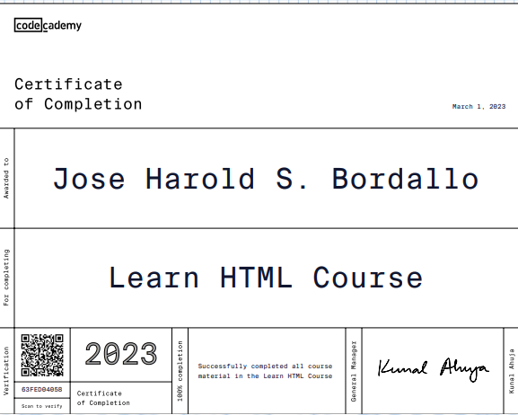
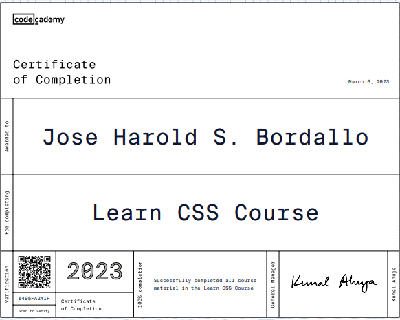
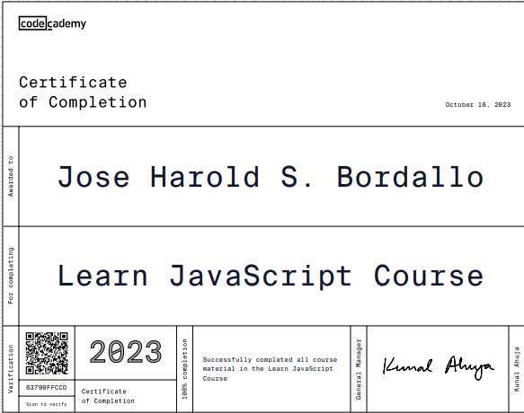

Jose Harold Bordallo
Summary
In quest of a position where I am able to transmit the knowledge
gained through my bachelor’s degree
Work Experience
- IT TECHNICIAN NATIONAL POLICE COMMISSION
DILG-NAPOLCOM BUILDING. BRGY WEST TRIANGLE
2017-2024
- CUSTOMER REPRESENTATIVE DHL
859 P. PAREDES ST. BRGY. 396, Sampaloc Manila Philippines
2016
-
On the Job Training Solution People’s Innovation (SPI Global)
486 hrs
1209 Jupiter St., Bel Air, Makati City
2015
Education
Tertiary
-
AMA Computer College Manila
Bachelor of Science and Information Technology
2011-2012
Erl Building, Old Sta. Mesa Manila City
-
ACLC College of Calbayog
Computer System and
Analysis Design
2012-2015
Maharlika Highway, Brgy.
Obrero Calbayog City, W. Samar
Secondary
-
Christ The King College
Magsaysay Blvd., Calbayog City Western Samar
2007-2001
Primary
-
Calbayog Pilot Central School
Rosales Blvd, Calbayog City Western Samar
2000-2007
Skills
- HTML: ⭐⭐⭐⭐
- CSS: ⭐⭐⭐⭐
- JAVASCRIPT: ⭐⭐⭐⭐
- BASIC COMPUTER TROUBLESHOOTING:⭐⭐⭐⭐⭐
- PHOTOSHOP:⭐⭐⭐⭐
Awards and Certification
- GUIDED TO FREE IMAGE ASSESTS USING ADOBE STOCK(APRIL 4, 2021)
-
CCNA Routing and Switching: Scaling Network (December 5, 2014)
-
CCNA Routing and Switching: Routing and Switching Essential (August
22, 2014)
-
CCNA Routing and Switching: Introduction to Networks (April 8, 2014)
HTML

CSS

JAVASCRIPT
